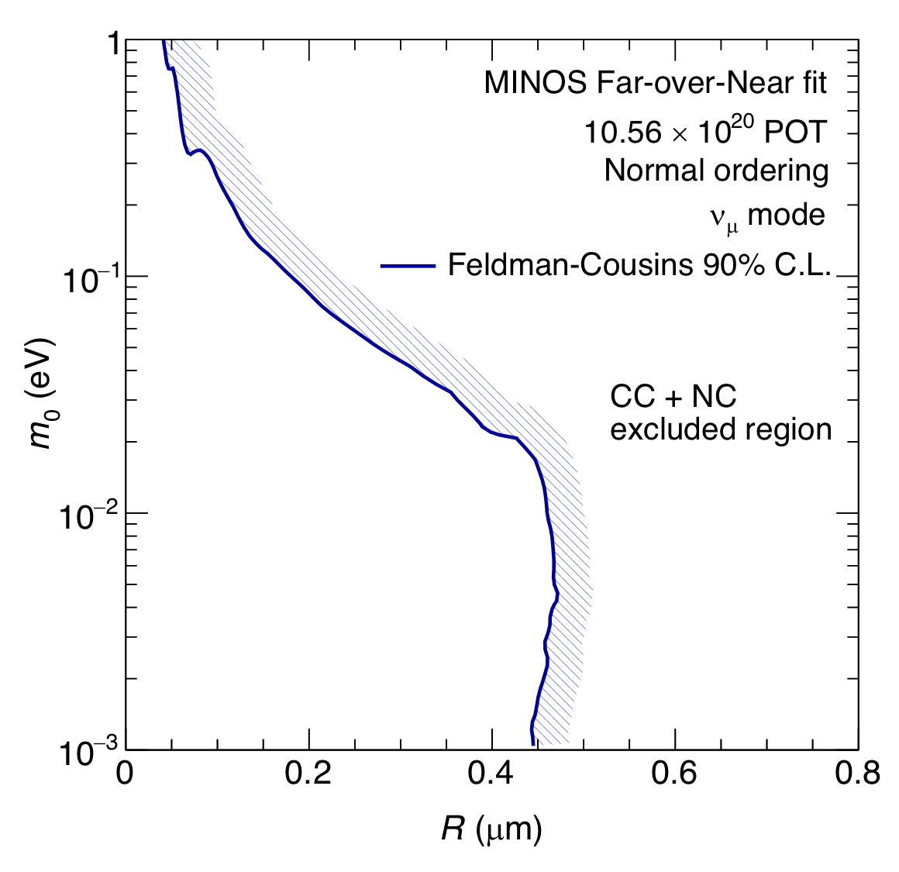

Our work focuses on experimental neutrino physics. As members of the MINOS/MINOS+, NO\(\nu\)A, SuperNEMO, and MINER Collaborations, we study neutrino oscillations, neutrinoless double beta decay, and coherent neutrino scattering. Find out more about these topics and the research we conduct by clicking on the buttons below.


Selected Work
Selected results from the UTKL Research Group.
Improved Constraints on Sterile Neutrino Mixing
Searches for electron antineutrino, muon neutrino, and muon antineutrino disappearance driven by sterile neutrino mixing have been carried out by the Daya Bay and MINOS+ collaborations. This Letter presents the combined results of these searches, along with exclusion results from the Bugey-3 reactor experiment, framed in a minimally extended four-neutrino scenario. Significantly improved constraints on the \(\theta_{\mu e}\) mixing angle are derived that constitute the most constraining limits to date over five orders of magnitude in the mass-squared splitting \(\Delta m_{41}^2\), excluding the \(90\%\) C.L. sterile-neutrino parameter space allowed by the LSND and MiniBooNE observations at \(90\%\) CLs for \(\Delta m_{41}^2 < 13\,\text{eV}^2\). Furthermore, the LSND and MiniBooNE 99% C.L. allowed regions are excluded at \(99\%\) CLs for \(\Delta m_{41}^2 < 1.6\,\text{eV}^2\). Abstract taken from [PhysRevLett.125.071801].
Large Extra Dimensions Search in MINOS

We report new constraints on the size of large extra dimensions from data collected by the MINOS experiment between 2005 and 2012. Our analysis employs a model in which sterile neutrinos arise as Kaluza-Klein states in large extra dimensions and thus modify the neutrino oscillation probabilities due to mixing between active and sterile neutrino states. Using Fermilab's NuMI beam exposure of $10.56 \times 10^{20}$ protons-on-target, we combine muon neutrino chargedx current and neutral current data sets from the Near and Far Detectors and observe no evidence for deviations from standard three-flavor neutrino oscillations. The ratios of reconstructed energy spectra in the two detectors constrain the size of large extra dimensions to be smaller than $0.45~\mu\text{m}$ at $90\%~\text{C.L.}$ in the limit of a vanishing lightest active neutrino mass. Stronger limits are obtained for non-vanishing masses. [Abstract taken from Phys. Rev. D 94, 111101(R).]
MINOS+ Electron Neutrino Appearance Analysis
Neutrinos are fascinating particles that undergo one of the most striking identity crises in nature. While many of our UT researchers explore the neutrino oscillation phenomenon through muon neutrino disappearance, we can also look for the appearance of electron neutrinos in a muon neutrino beam. Electron neutrino appearance helps us explore one of the fundamental ‘big whys’ of our universe: why is there more matter than antimatter? This is done by probing a symmetry that is broken by the weak nuclear force called CP-violation. We can also use electron neutrino appearance to test exotic oscillation models that include non-standard interactions, 3+1 sterile neutrino oscillations, and potential decoherence effects.